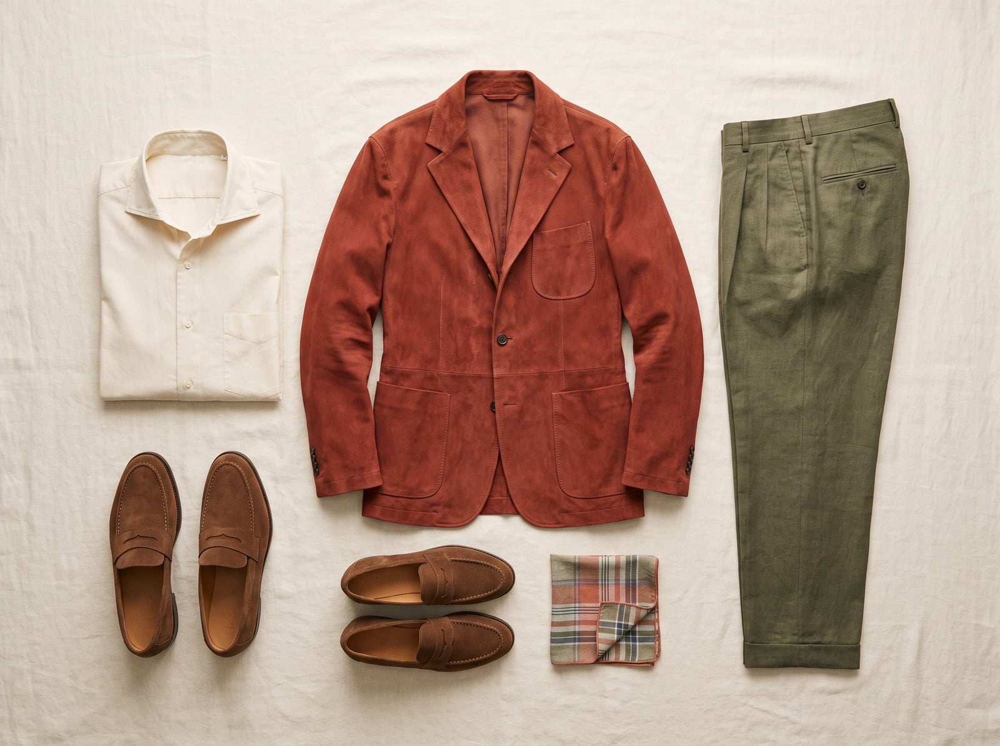
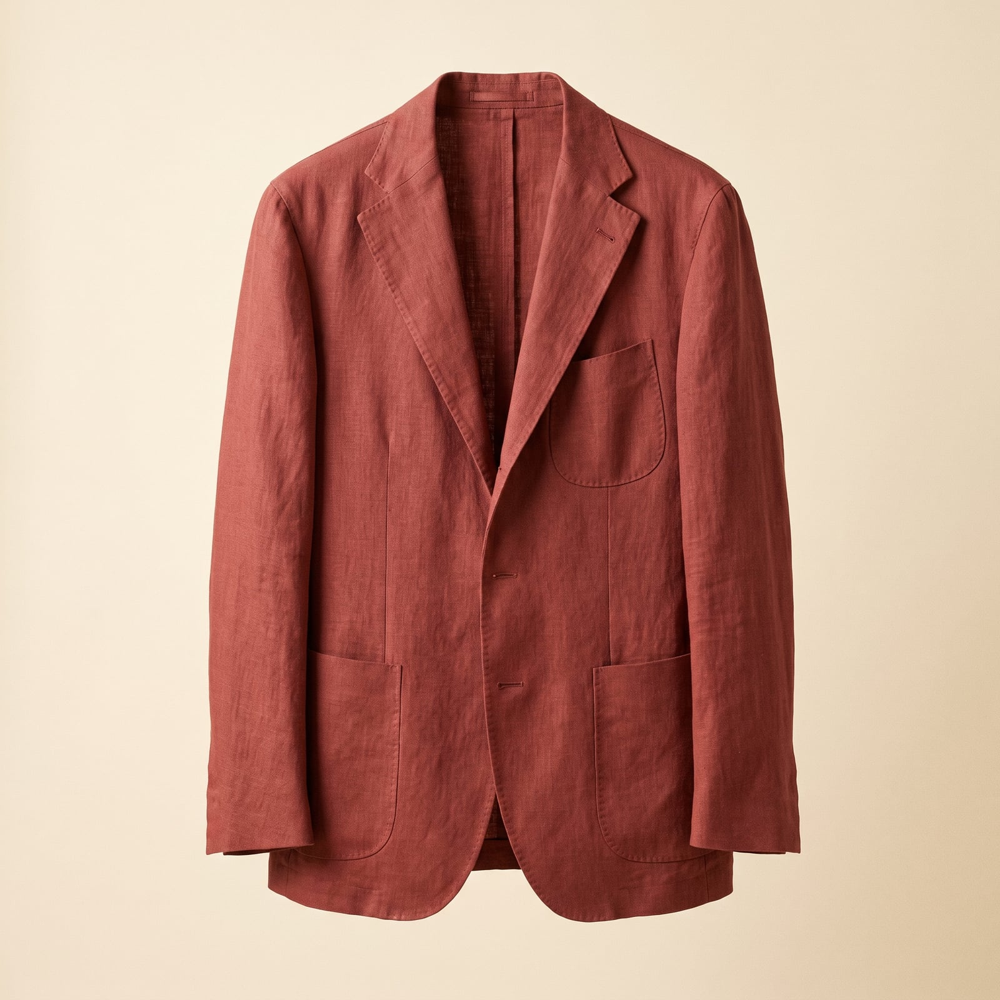
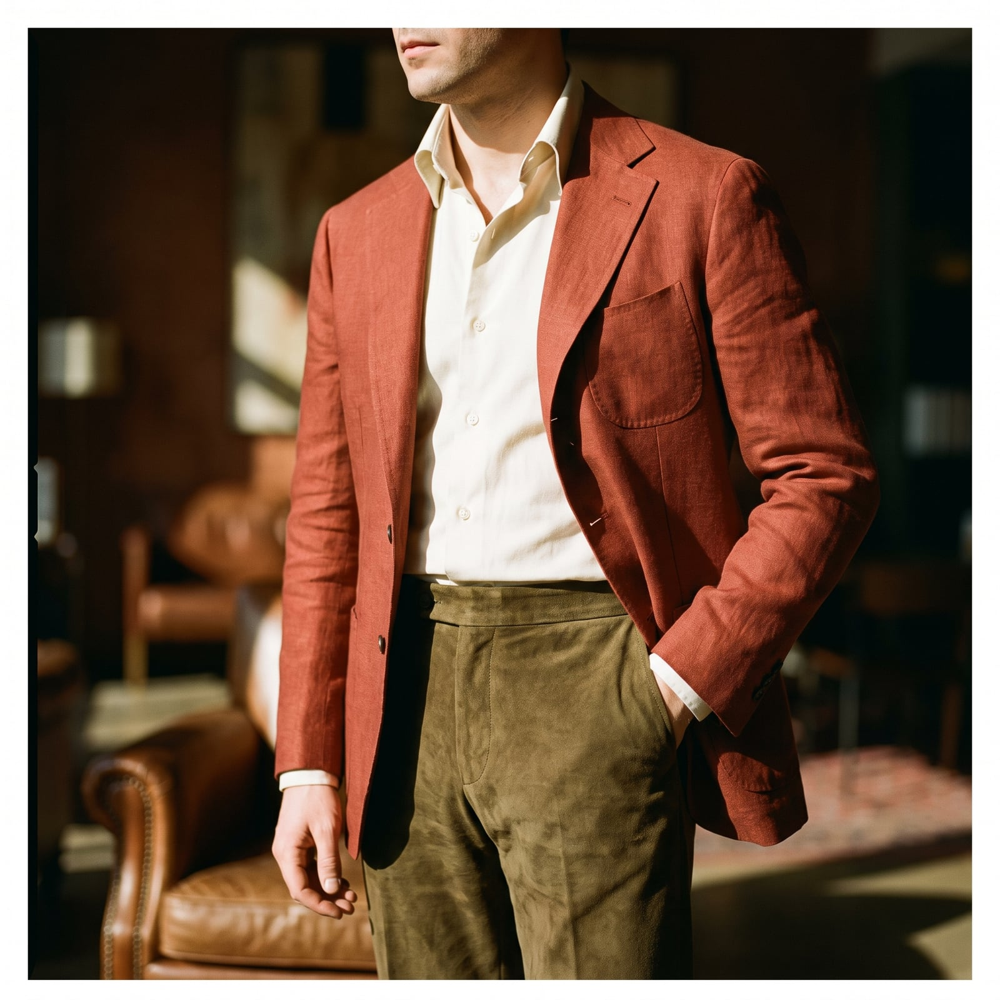
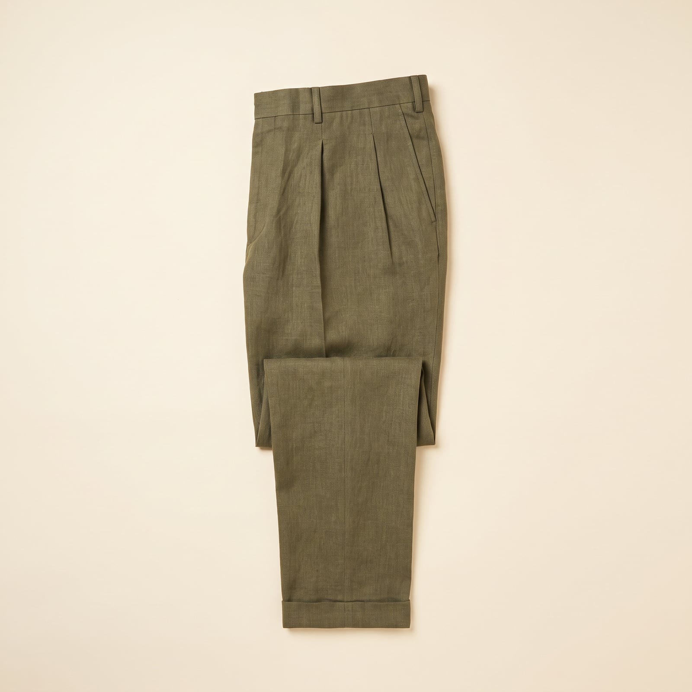
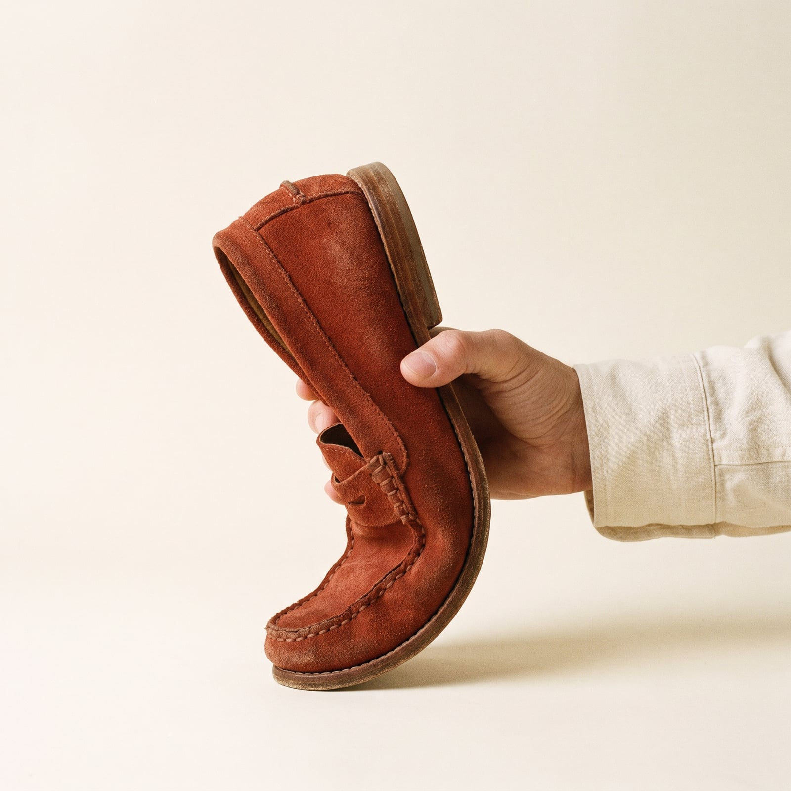
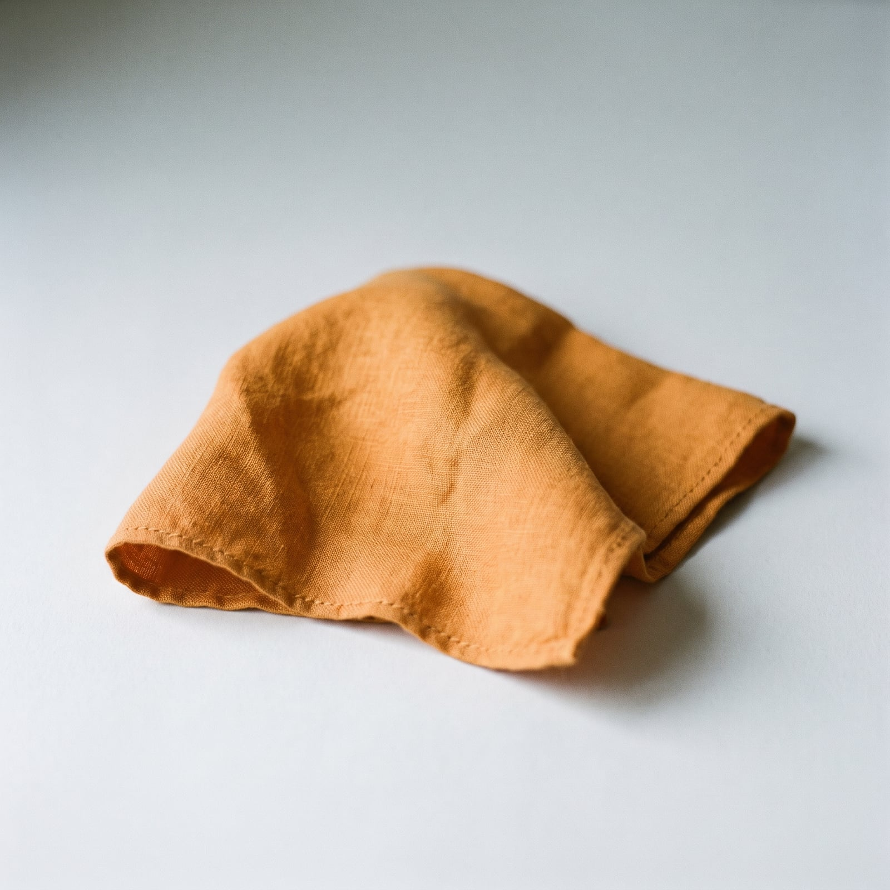

The Neapolitan
The word sprezzatura comes from a sixteenth-century courtier's handbook, Castiglione's “Book of the Courtier,” where it meant a certain nonchalance, the trick of making difficult things look effortless. Naples' tailors adopted it as a house philosophy sometime in the twentieth century, when houses like Rubinacci and Kiton began cutting jackets that broke every rule Savile Row held sacred: soft, barely-there shoulders with a signature pucker where the sleeve meets the body, high armholes for freedom of movement, a breast pocket curved like a little boat.
The effect, worn correctly, is that the jacket seems to be having a slightly better day than you are — draping and folding with the body instead of holding a rigid line against it. Buttons left open, a linen pocket square stuffed rather than folded, brown suede in a city built for grey worsted: these aren't oversights, they're the whole argument. A Neapolitan jacket that looked too perfect would have missed the point entirely.
It suits people for whom charm is a form of intelligence, who understand that ease reads as confidence, and that the most memorable outfits are the ones that seem almost accidental. There's real discipline hiding under the nonchalance — a good sprezzatura jacket takes as many hours to make as a stiff one — but the discipline's whole job is to disappear.
- The spalla camicia — a soft, shirt-like shoulder with a telltale pucker at the sleeve
- An unlined or half-lined jacket that packs into a bag without complaint
- The barchetta (little boat) breast pocket, curved rather than straight
- Patch pockets and a closer-cut body than English tailoring allows
- Color and texture — brown suede, unlined linen, faded madras — deployed with confidence

The Unstructured Jacket
Rubinacci and Kiton built their reputations on jackets that abandoned Savile Row's shoulder padding entirely, sewing the sleeve in with a shirt-like seam (the spalla camicia) that puckers slightly at the shoulder — a construction flaw everywhere else, a signature here.
Machine-made but genuinely unstructured and half-canvassed, the most accessible real entry into the silhouette.
Shop this →The house that arguably standardized the washed, garment-dyed unstructured jacket for a wider audience.
Shop this →Hand-sewn spalla camicia from one of the two houses that defined the construction.
Shop this →
The Spread-Collar Shirt
A wide, open spread collar became the Neapolitan default because it frames an open jacket and an undone top button — the whole point being a shirt that still looks finished with the tie left off entirely.
A real spread collar and slim cut at a fraction of the Neapolitan houses' prices.
Shop this →Neapolitan shirtmakers' factory lines — soft collar construction, generous armholes.
Shop this →Hand-finished buttonholes and a collar cut to roll exactly right without a tie.
Shop this →
The Pleated Trouser
Italian trousers kept single or double forward pleats long after American and British tailoring flattened the front, because the pleat was never about volume — it was about how the trouser hung and moved from a higher rise.
Gets the rise and pleat right; wool-blend cloth rather than a pure fine wool.
Shop this →The trouser specialist most Neapolitan tailors themselves point to for ready-to-wear.
Shop this →Cut and finished with the same hand-work as the jacket, rather than as an afterthought.
Shop this →
The Suede Loafer
Unlined suede loafers became the house shoe of southern Italian tailoring for the same reason as the unstructured jacket: less inside the shoe means more give, and more give means it moves the way sprezzatura demands.
Spanish-made, genuinely unlined, at a fraction of the Italian makers' cost.
Shop this →Real hand-stitched construction and a softer suede than the entry tier.
Shop this →Made-to-order in the exact soft construction the rest of the capsule is built around.
Shop this →
The Linen Pocket Square
Where American ties carry the pattern, the Neapolitan wardrobe puts its personality in the breast pocket — a linen square stuffed in with a practiced-looking carelessness that took longer to master than any knot.
Real linen with hand-rolled edges at an approachable price.
Shop this →French mill linen, the reference point most Italian tailors keep in stock themselves.
Shop this →House prints from the tailoring firms themselves, matched to their own jacket cloths.
Shop this →Buy the jacket unlined, or at most half-lined, even in a cooler climate — a sweater underneath solves for warmth without sacrificing the soft shoulder that makes the whole silhouette work. Let the jacket show its construction a little: a visible pucker at the sleevehead is a mark of quality here, not a flaw to have pressed out.
Lean into color and texture where English or American tailoring would stay conservative — a brown suede jacket, an unstructured linen blazer with real wrinkles in it by 3pm, a pocket square that doesn't quite match anything else. The confidence is the point; worn like it's precious rather than lived-in, the jacket has missed the assignment.
The jacket that makes this style work in a trattoria will look underdressed and slightly sloppy in a boardroom — this is fundamentally leisure tailoring, built for warm weather and long lunches, not for a client pitch that calls for structure and a stronger shoulder. A soft-shouldered, unlined jacket worn somewhere that calls for the discipline of a proper suit coat reads as not having one, not as having chosen this one on purpose — the same country-versus-city confusion that trips up English tailoring, just with the roles reversed.
Don't iron out the texture that's supposed to be there — a crisply pressed, wrinkle-free version of this silhouette isn't more polished, it's a different style wearing this one's clothes. Avoid pairing the closer, shorter Neapolitan cut with the wider-legged trousers that belong to English tailoring; the whole point is a leaner, more continuous line from shoulder to shoe.
The whole point, honestly -- an unlined linen jacket, an open-collar linen shirt with no undershirt, unlined suede loafers with no socks. Nothing changes so much as relaxes further.
A heavier flannel or a cashmere-blend version of the same unstructured jacket, a scarf wrapped loosely rather than a tie, and a soft overcoat that keeps the same unstructured shoulder.
A raincoat is basically un-Neapolitan, but if pressed: a soft, unlined cotton mac, worn open, with the suede loafers reluctantly swapped for something less precious.
This wardrobe does not really believe in snow. A heavier wool overcoat gets added over everything else, and the suede loafers get put away in favor of a plain leather boot, unhappily.
The jacket gets a little more structure and a matching trouser (a rare full suit), the shirt gets buttoned higher, and a silk tie appears -- still soft, never stiff.

Naples itself, unglamorized, plus Capri for a long lunch and the Amalfi coast off-season, when the crowds and the prices both thin out. Trips get planned around a specific trattoria as often as a view, and a detour is always justified if the reason is food.
Puglia for the olive oil and the quiet, and a standing argument with anyone who suggests Rome is a substitute for any of this. The south is treated as a different country from the north, and visited with the loyalty of someone defending a hometown.
Elena Ferrante for the city as much as the story, and Curzio Malaparte's The Skin for a darker, stranger version of the same place. Any biography of a Neapolitan tailor that happens to exist gets read cover to cover, footnotes included.
Reads at a cafe table, not a desk, and rarely finishes a book in one sitting — the interruptions from people he knows are considered part of the experience, not an annoyance to it.
Find it on Amazon →Classic Neapolitan song — 'O Sole Mio unironically, the way it was always meant to be heard — alongside Pino Daniele's bluesy, more modern reinvention of the same tradition.
Opera, attended live whenever the chance arises rather than streamed, with a strong and often contrarian opinion about which regional company does it better than San Carlo.
Listen on YouTube →Sun-faded plaster walls left that way on purpose, and a table built for long lunches rather than efficient ones — big enough for people to arrive and leave throughout the afternoon without anyone getting up.
Mismatched but beautiful ceramics collected over years rather than bought as a set, and windows kept open regardless of season, on the theory that a house should breathe the same air as the street.
See more on Pinterest →Long lunches treated as the day's main event rather than an interruption to it, and a standing card game that's been running with the same four players for longer than anyone will admit.
An interest in food that borders on the scholarly — knowing exactly which market stall has the best of anything, and being willing to walk considerably further than necessary to prove it.
Learn more →